For UMN: How to setup remote enviroment with CSE lab machine via VSCode
VSCode Setup with CSE Lab Machines on Your Own Computer
Demo
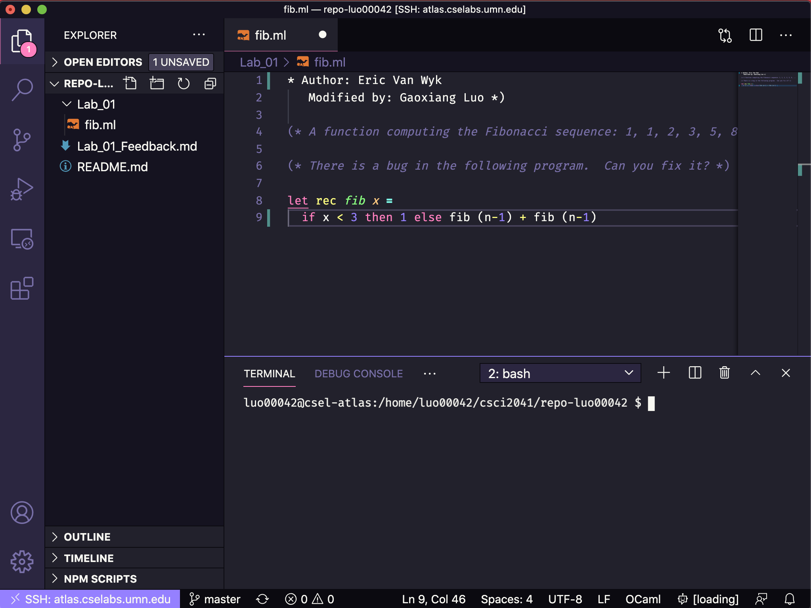
Why should you consider this setup?
- feel like working on CSE Lab Machines literally
- don’t have to install
OCamlon your computer because you’re using lab’sOCaml - graphical user interface with
OCamlSyntax Highlighting - faster than
volesince it talks to server directly rather than transmitting through web browser - can be used on
Linux,MacOSandWindowsbecause they all haveVSCode - file transfer: drag you local file into CSE lab machine
Tutorial
This tutorial can help you to set up your remote enviroment graphically with CSE lab machines on your own computer.
-
Open
VSCode, go to extension on the left nevigation bar and searchssh
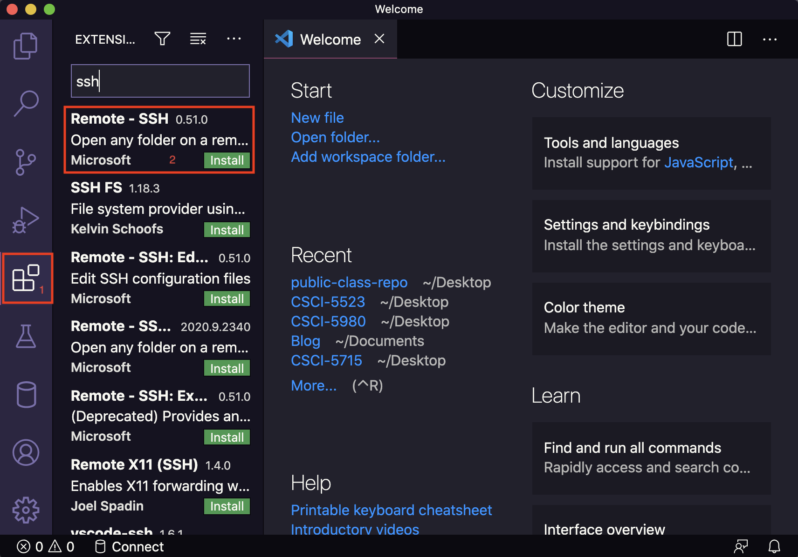 -
Install
REMOTE - SSH, clickSSH extensionicon on the left nevigation bar and clickconnect
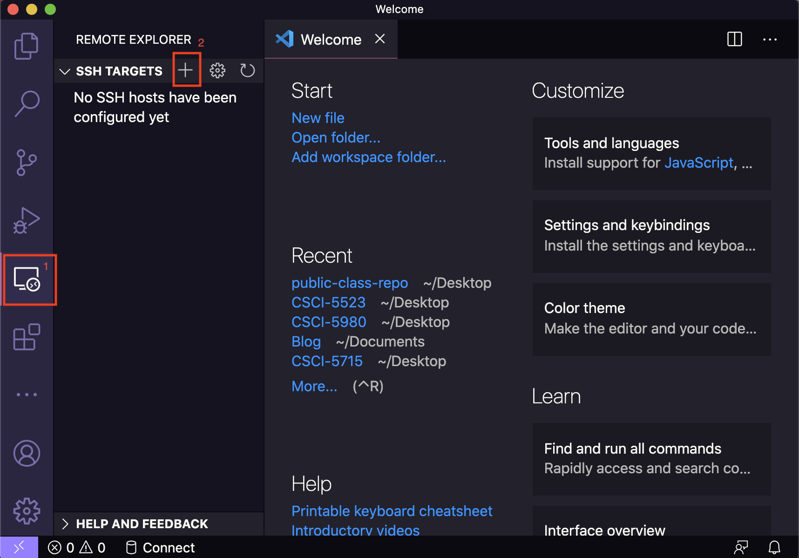 -
On the pop-up command window, type in
ssh <x500>@<cse lab machines> -A.
For instance, I will use:ssh luo00042@atlas.cselabs.umn.edu -AATLAS is a server machine which has 256G RAM! But sometimes if a student is running heavy-duty task on ATLAS, you may want to use another machine.ssh luo00042@csel-kh4250-03.cselabs.umn.edu -A
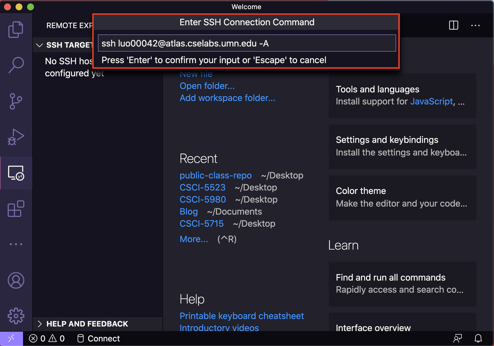
Note: A list of CSE lab UNIX machines that you can remotely work on, you can find them here.
Remember: Replace the x500 with yours, not mine; and make sure to include the -A flag, otherwise you have to use VPN or be under university wifi to connect.
-
Click to update ssh configuration so you don’t have to type the long ssh command every time.
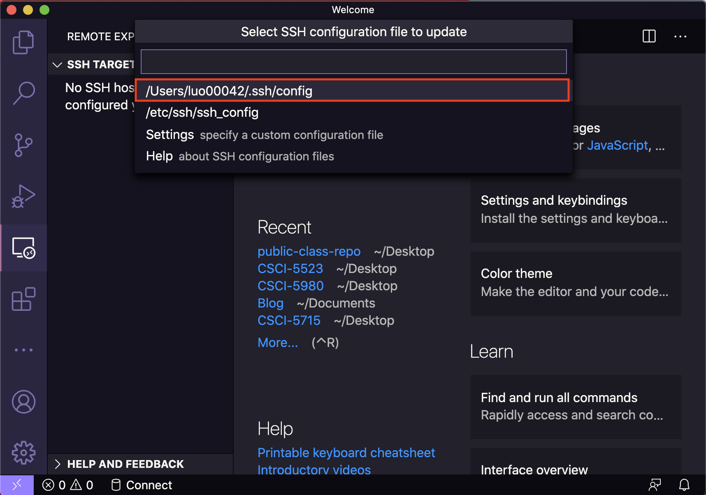 -
When it’s done, there will be a SSH target on the left. Click
connect
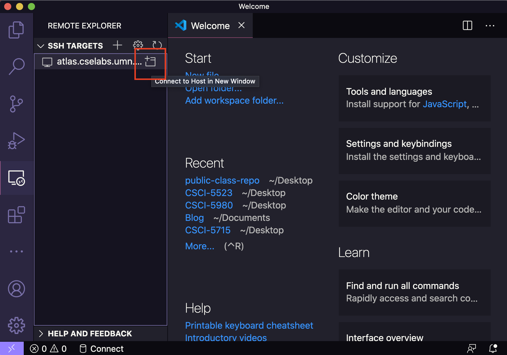 -
A new window will pop up and there will be prompt that you need to enter your
x500password.
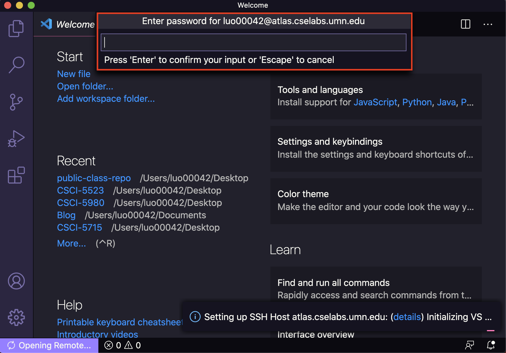 -
You are in CSE lab machine via SSH connection! Click
Open Folder. Doesn’t it look familiar to you? That’s your CSE lab folder! Navigate to your own repo and clickOK
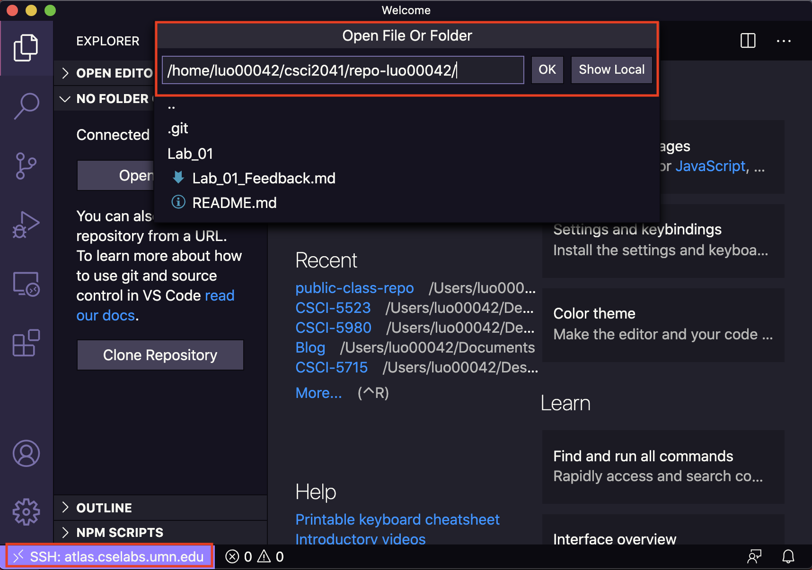 -
That’s it! You can open a terminal within
VSCode, and it will be under SSH connection as well!
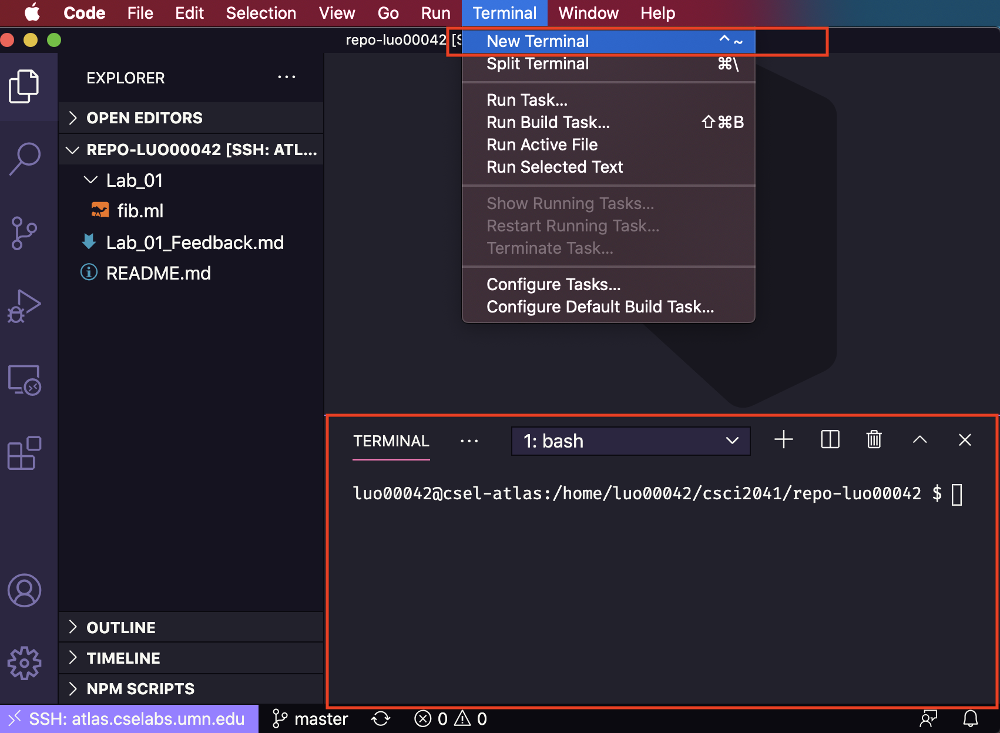
OCaml Syntax Highlighting Enable
-
This is how it looks before enabling
OCamlsyntax highlighting
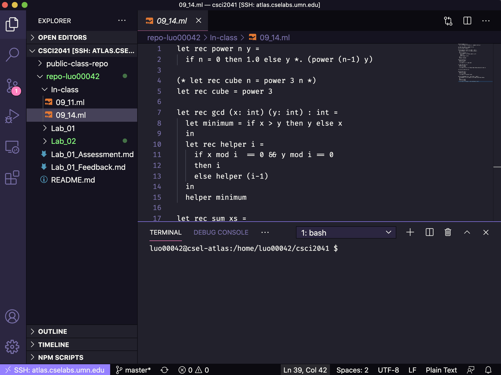 -
Go to extension on the left nevigation bar again and search
OCaml. Install it, and reload the window.
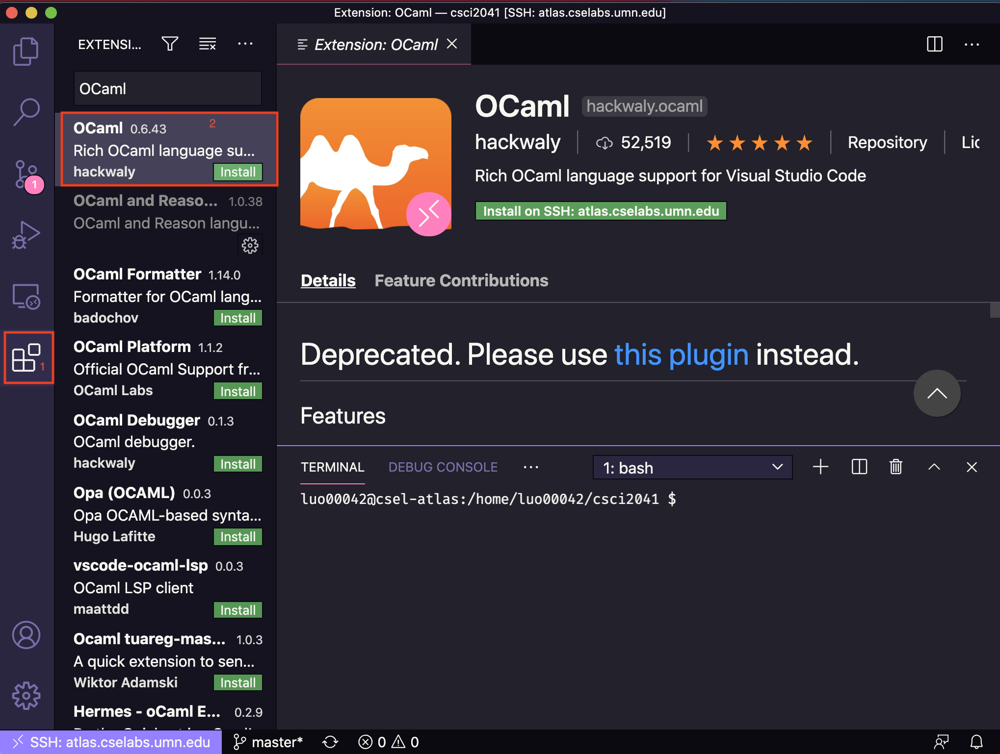 -
Now you
OCamlcode should be highlighted accoridng to the syntax.
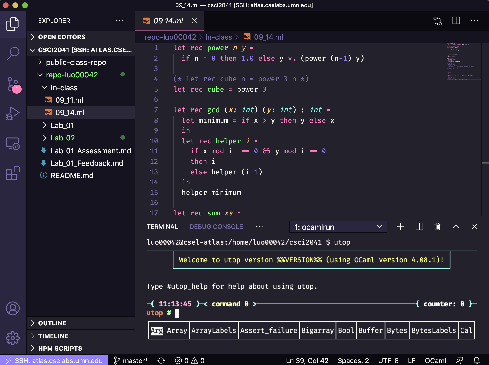
Now you can edit your code on lab machine, save your code on lab machine, and test your code with terminal on lab machine!
Editor Note: While it’s easier to edit your code with a nice-looking IDE, it’s still good to pick up tools like emacs and vim. I hope you find this tutorial helpful to you!